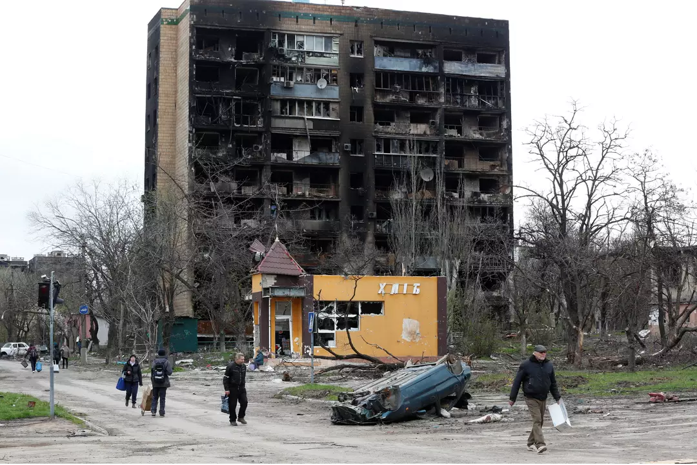

SV Notícias
Destaque
A história do marcante Carnaval de 1919, o primeiro após a pandemia da gripe espanhola

Uma estimativa feita pelo jornal A Noite na época apontava que o Carnaval de 1919 levou cerca de 400 mil pessoas ao Centro do Rio de Janeiro
Leia mais!
Guerra Rússia X Ucrânia
Rússia planeja tomar controle de Donbass e sul da Ucrânia
A Rússia planeja assumir o controle total de Donbas e do sul da Ucrânia durante a segunda fase do que ela chama de sua operação militar especial
Leia mais!